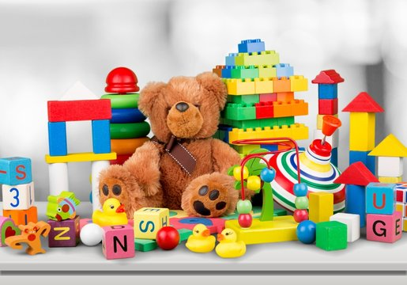
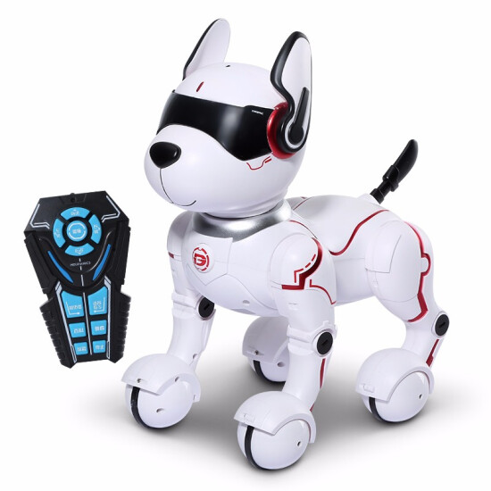

| header of toy |
|---|
|   |
| toy usually is playing | there's also no hard fall toys there If any children's fall down They Won't get a lot from that fall down on accident if there's a soft toy like a bear |
| Toys is much use windy small babies like half years If those babies play with them then they will the learning this playing things and they Won't be hard because of this soft toys |
| If you don't want Made then the children's won't have anyone but Parents and brothers babysitter this Toys are good for babies and they will help a lot |
| Sometime babies like those toys because of that babies and their parents have a lot of time to do the things like Parents do there Dub and babies play with their toys Everyone Has a lot Time |
| Where are you talking about the toy and the kids and parents right but let's make a twist that is how are the Toys meant to make them busy how? |
| Because toys have a lots of interesting things to do like a teddy bear if we click on that then it will Automatically get out some Sounds |
| There is interesting parts of toys like there's a tie that is like a cactus and if you say something to that it will repeat do you give interesting part |
| Last thing to finished it with time and says oh they're on abilities like automatically going robot controlling and that one I said befoe |